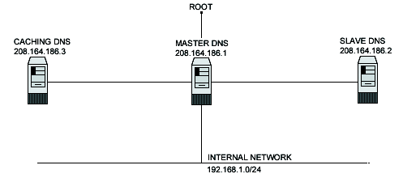

| Securing and Optimizing Linux: RedHat Edition -A Hands on Guide | ||
|---|---|---|
| Prev | Chapter 21. Software -Networking | Next |
Setting up a caching server for client local machines will reduce the load on the site's primary server. A caching only name server will find the answer to name queries and remember the answer the next time we need it. This will shorten the waiting time the next time significantly. For security reasons, it is very important that DNS doesn't exist between hosts on the corporate network and external hosts; it is far safer to simply use IP addresses to connect to external machines from the corporate network and vice-versa.
In our configuration and installation we'll run BIND/DNS as non root-user and in a chrooted environment. We also provide you three different configurations;
one for a simple caching name server only client
one for a slave secondary server
one for a master name server primary server.
The simple caching name server configuration will be used for your servers that don't act as a master or slave name server, and the slave and master configurations will be used for your servers that act as a master name server and slave name server. Usually one of your servers acts as master, another one acts as slave and the rest act as simple caching client name server.
This is a graphical representation of the DNS configuration we use in this book. We try to show you different settings

Caching Only DNS
Master DNS
Slave DNS
These installation instructions assume
Commands are Unix-compatible.
The source path is /var/tmp. other paths are possible.
Installations were tested on Red Hat Linux 6.1 and 6.2.
All steps in the installation will happen in super-user account root.
ISC BIND version number is 8.2.2-patchlevel5
These are the Package(s) required:
| ISC BIND Homepage:http://www.isc.org/ |
| ISC BIND FTP Site: 204.152.184.27 |
Before you decompress Tarballs and install, it is a good idea to make a list of files on the system before you install BIND, and one afterwards, and then compare them using diff to find out what file it placed where. Simply run find /* > DNS1 before and find /* > DNS2 after you install the software, and use diff DNS1 DNS2 > DNS-Installed to get a list of what changed.
Compile and Decompress the tarball (tar.gz).
[root@deep] /# mkdir /var/tmp/bind
[root@deep] /# cp bind-contrib.tar.gz /var/tmp/bind/
[root@deep] /# cp bind-doc.tar.gz /var/tmp/bind/
[root@deep] /# cp bind-src.tar.gz /var/tmp/bind/
|
Move into the new bind directory cd /var/tmp/bind and decompress the tar files:
[root@deep ]/bind# tar xzpf bind-contrib.tar.gz
[root@deep ]/bind# tar xzpf bind-doc.tar.gz
[root@deep ]/bind# tar xzpf bind-src.tar.gz
|